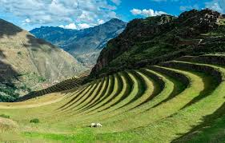

El Valle Sagrado de los Incas

es un vasto y fértil valle andino ubicado en el corazón del departamento de Cusco. A lo largo del río Urubamba (o Vilcanota), este valle no solo es un paisaje de belleza impresionante, sino también una región de profunda importancia histórica y cultural para la civilización inca. A diferencia de Machu Picchu, que era una ciudad sagrada oculta, el Valle Sagrado fue un centro de vida, agricultura y espiritualidad inca.
- Maras y Moray: Dos de los sitios más fascinantes del valle. Moray es un complejo de terrazas circulares concéntricas que se cree que funcionaron como un laboratorio agrícola. Los incas experimentaban con la aclimatación de diferentes cultivos, ya que cada nivel de las terrazas tenía una temperatura y humedad distintas. Cerca de allí, las Salineras de Maras son un espectáculo visual impresionante: miles de pozas de sal, en uso desde tiempos preincas, que extraen la sal de un manantial de agua salada.
- Písac: Un pintoresco pueblo conocido por su mercado artesanal y su impresionante complejo arqueológico en lo alto de la montaña. El mercado es un lugar vibrante donde se pueden comprar textiles, cerámicas y joyería. El sitio arqueológico, con sus andenes y templos, ofrece vistas espectaculares del valle y muestra la maestría inca en la construcción de muros de piedra.